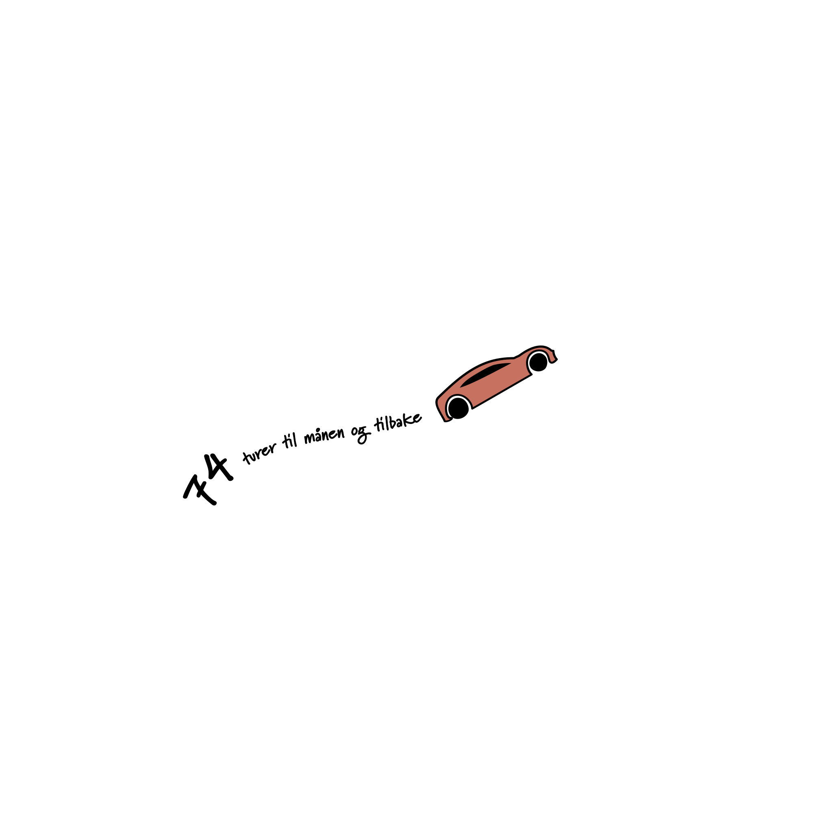

Vær en
miljødetektiv
Se om du kan finne ut hvor stort
karbonfotavtrykk du har
Hvis 1,1 billioner brukere bruker tiktok i
fem minutter, tilsvarer det:

Hvis 1,1 billioner brukere bruker tiktok i
fem minutter, tilsvarer det: